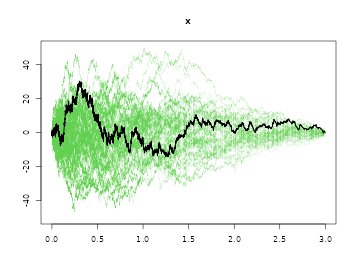

Marginal modelling of clustered survival data
Klaus Holst & Thomas Scheike
2020-09-09
Source:vignettes/marginal-cox.Rmd
marginal-cox.RmdOverview
A basic component for our modelling of multivariate survival data is that many models are build around marginals that on Cox form. The marginal Cox model can be fitted efficiently in the mets package, in particular the handling of strata and robust standard errors is optimized.
The basic models assumes that each subject has a marginal on Cox-form \[ \lambda_{g(k,i)}(t) \exp( X_{ki}^T \beta). \] where \(g(k,i)\) gives the strata for the subject.
We here discuss and show how to get robust standard errors of
the regression parameters
the baseline
and how to do goodness of fit test using
- cumulative residuals score test
First we generate some data from the Clayton-Oakes model, with \(5\) members in each cluster and a variance parameter at \(2\)
library(mets) options(warn=-1) set.seed(1000) # to control output in simulatins for p-values below. n <- 1000 k <- 5 theta <- 2 data <- simClaytonOakes(n,k,theta,0.3,3)
The data is on has one subject per row.
- time : time of event
- status : 1 for event and 0 for censoring
- x : x is a binary covariate
- cluster : cluster
Now we fit the model and produce robust standard errors for both regression parameters and baseline.
First, recall that the baseline for strata \(g\) is asymptotically equivalent to \[\begin{align} \hat A_g(t) - A_g(t) & = \sum_{k \in g} \left( \sum_{i: ki \in g} \int_0^t \frac{1}{S_{0,g}} dM_{ki}^g - P^g(t) \beta_k \right) \end{align}\] with \(P^g(t) = \int_0^t E_g(s) d \hat \Lambda_g(s)\) the derivative of \(\int_0^t 1/S_{0,g}(s) dN_{\cdot g}\) wrt to \(\beta\), and \[\begin{align} \hat \beta - \beta & = I(\tau)^{-1} \sum_k ( \sum_i \int_0^\tau (Z_{ki} - E_{g}) dM_{ki}^g ) = \sum_k \beta_{k} \end{align}\] with \[\begin{align} M_{ki}^g(t) & = N_{ki}(t) - \int_0^t Y_{ki}(s) \exp( Z_{ki} \beta) d \Lambda_{g(k,i)}(t), \\ \beta_{k} & = I(\tau)^{-1} \sum_i \int_0^\tau (Z_{ki} - E_{g}) dM_{ki}^g \end{align}\] the basic 0-mean processes, that are martingales in the iid setting, and \(I(t)\) is the derivative of the total score, \(\hat U(t,\beta))\), with respect to \(\beta\) evaluated at time \(t\).
The variance of the baseline of strata g is estimated by \[\begin{align} \sum_{k \in g} ( \sum_{i: ki \in g} \int_0^t \frac{1}{S_{0,g(k,i)}} d\hat M_{ki}^g - P^g(t) \beta_k )^2 \end{align}\] that can be computed using the particular structure of \[\begin{align} d \hat M_{ik}^g(t) & = dN_{ik}(t) - \frac{1}{S_{0,g(i,k)}} \exp(Z_{ik} \beta) dN_{g.}(t) \end{align}\]
This robust variance of the baseline and the iid decomposition for \(\beta\) is computed in mets as:
out <- phreg(Surv(time,status)~x+cluster(cluster),data=data) summary(out) #> #> n events #> 5000 4854 #> #> 1000 clusters #> log-coeffients: #> Estimate S.E. dU^-1/2 P-value #> x 0.287859 0.028177 0.028897 0 #> #> exp(coeffients): #> Estimate Std.Err 2.5% 97.5% P-value #> [x] 1.333569 0.037576 1.259921 1.407217 0 # robust standard errors attached to output rob <- robust.phreg(out)
We can get the iid decomposition of the \(\hat \beta - \beta\) by
# making iid decomposition of regression parameters betaiid <- iid(out) head(betaiid) #> [,1] #> [1,] -3.461601e-04 #> [2,] -1.449189e-03 #> [3,] -3.898156e-05 #> [4,] 4.215605e-04 #> [5,] 3.425390e-04 #> [6,] -7.706668e-05 # robust standard errors crossprod(betaiid)^.5 #> [,1] #> [1,] 0.02817714 # same as
We now look at the plot with robust standard errors
bplot(rob,se=TRUE,robust=TRUE,col=3)

We can also make survival prediction with robust standard errors using the phreg.

Finally, just to check that we can recover the model we also estimate the dependence parameter
tt <- twostageMLE(out,data=data) summary(tt) #> Dependence parameter for Clayton-Oakes model #> Variance of Gamma distributed random effects #> $estimates #> Coef. SE z P-val Kendall tau SE #> dependence1 0.5316753 0.03497789 15.20032 0 0.2100093 0.0109146 #> #> $type #> NULL #> #> attr(,"class") #> [1] "summary.mets.twostage"
Goodness of fit
The observed score process is given by \[\begin{align} U(t,\hat \beta) & = \sum_k \sum_i \int_0^t (Z_{ki} - \hat E_g ) d \hat M_{ki}^g \end{align}\] where \(g\) is strata \(g(k,i)\). The observed score has the iid decomposition \[\begin{align} \hat U(t) = \sum_k \sum_i \int_0^t (Z_{ki} - E_g) dM_{ki}^g - I(t) \sum_k \beta_k \end{align}\] where \(\beta_k\) is the iid decomposition of the score process for the true \(\beta\) \[\begin{align} \beta_k & = I(\tau)^{-1} \sum_i \int_0^\tau (Z_{ki} - E_g ) d M_{ki}^g \end{align}\] and \(I(t)\) is the derivative of the total score, \(\hat U(t,\beta))\), with respect to \(\beta\) evaluated at time \(t\).
This observed score can be resampled given it is on iid form in terms of clusters.
Now using the cumulative score process for checking proportional hazards
gout <- gof(out) gout #> Cumulative score process test for Proportionality: #> Sup|U(t)| pval #> x 30.24353 0.401
The p-value reflects wheter the observed score process is consistent with the model.
plot(gout)

Computational aspects
The score processes can be resampled as in Lin, Wei, Ying (1993) using the martingale structure, such that the observed score process is resampled by \[\begin{align} \sum_k \sum_i \int_0^t g_{ki} (Z_{ki} - E_g) dN_{ki} - I(t) I^{-1}(\tau) g_{ki} \int_0^{\tau} (Z_{ki} - E_g) dN_{ki} . \end{align}\] where \(g_{ki}\) are i.i.d. standard normals.
Based on the zero mean processes we more generally with clusters can resample the score process. For resampling of score process we need \[\begin{align} U(t,\beta) & = \sum_k \sum_i g_k \int_0^t (Z_{ki} - E_g ) dM_{ki}^g \end{align}\] where \(g\) is strata. We write \(g_k\) as \(g_{ki}\) and thus repeating \(g_k\) within each cluster.
Computations are done using that \[\begin{align*}
\int_0^t (Z_{ki} - E_{g}) dM_{ki}^g & = \int_0^t (Z_{ki} - E_{g}) dN_{ki}^g - \int_0^{t} (Z_{ki} - E_{g}) Y_{ki}(u) d\Lambda^g(u)
\end{align*}\] therefore and summing the compensator part with the \(g_{ki}\) multipliers then gives for each strata \(g\) \[\begin{align*}
& \int_0^t \frac{S_{1g}^w(u)}{S_{0g}(u)} dN_{g.}(v) - \int_0^t E_{g}(u) \frac{S_{0g}^w(u)}{S_{0g}(u)} dN_{g.}(v)
\end{align*}\] with
\[\begin{align*}
S_{jg}^w(t) & = \sum_{ki \in g} \exp(Z_{ki} \beta) Z_{ki}^j Y_{ki}(t) g_{ki} \\
S_{jg}(t) & = \sum_{ki \in g} \exp(Z_{ki} \beta) Z_{ki}^j Y_{ki}(t).
\end{align*}\]
Cluster stratified Cox models
For clustered data it is possible to estimate the regression coefficient within clusters by using Cox’s partial likelihood stratified on clusters.
Note, here that the data is generated with a different subject specific structure, so we will not recover the \(\beta\) at 0.3 and the model will not be a proportional Cox model, we we would also expect to reject “proportionality” with the gof-test.
The model can be thought of as \[ \lambda_{g(k,i)} (t) \exp( X_{ki}^T \beta) \] where \(\lambda_g(t)\) is some cluster specific baseline.
The regression coefficient \(\beta\) can be estimated by using the partial likelihood for clusters.
out <- phreg(Surv(time,status)~x+strata(cluster),data=data) summary(out) #> #> n events #> 5000 4854 #> #> 5000 clusters #> log-coeffients: #> Estimate S.E. dU^-1/2 P-value #> x 0.406307 0.032925 0.039226 0 #> #> exp(coeffients): #> Estimate Std.Err 2.5% 97.5% P-value #> [x] 1.501263 0.049429 1.404383 1.598143 0
SessionInfo
sessionInfo() #> R version 4.0.2 (2020-06-22) #> Platform: x86_64-pc-linux-gnu (64-bit) #> Running under: Ubuntu 16.04.6 LTS #> #> Matrix products: default #> BLAS: /usr/lib/openblas-base/libblas.so.3 #> LAPACK: /usr/lib/libopenblasp-r0.2.18.so #> #> locale: #> [1] LC_CTYPE=en_US.UTF-8 LC_NUMERIC=C #> [3] LC_TIME=en_US.UTF-8 LC_COLLATE=en_US.UTF-8 #> [5] LC_MONETARY=en_US.UTF-8 LC_MESSAGES=en_US.UTF-8 #> [7] LC_PAPER=en_US.UTF-8 LC_NAME=C #> [9] LC_ADDRESS=C LC_TELEPHONE=C #> [11] LC_MEASUREMENT=en_US.UTF-8 LC_IDENTIFICATION=C #> #> attached base packages: #> [1] stats graphics grDevices utils datasets methods base #> #> other attached packages: #> [1] mets_1.2.8.1 lava_1.6.7 timereg_1.9.7 survival_3.1-12 #> #> loaded via a namespace (and not attached): #> [1] Rcpp_1.0.5 cpp11_0.2.1 knitr_1.29 #> [4] magrittr_1.5 splines_4.0.2 lattice_0.20-41 #> [7] R6_2.4.1 ragg_0.3.1 rlang_0.4.7 #> [10] stringr_1.4.0 tools_4.0.2 grid_4.0.2 #> [13] xfun_0.17 htmltools_0.5.0 systemfonts_0.3.1 #> [16] yaml_2.2.1 assertthat_0.2.1 rprojroot_1.3-2 #> [19] digest_0.6.25 numDeriv_2016.8-1.1 pkgdown_1.6.0 #> [22] crayon_1.3.4 Matrix_1.2-18 fs_1.5.0 #> [25] memoise_1.1.0 evaluate_0.14 rmarkdown_2.3 #> [28] stringi_1.5.3 compiler_4.0.2 desc_1.2.0 #> [31] backports_1.1.9 mvtnorm_1.1-1